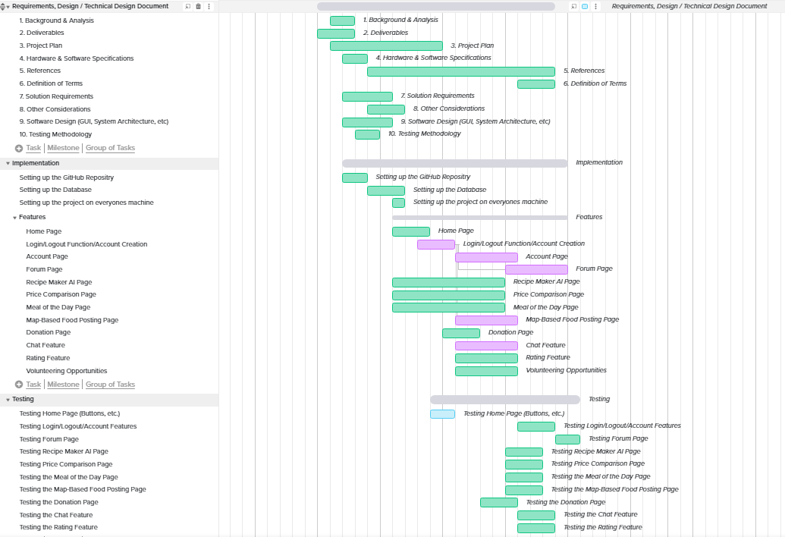
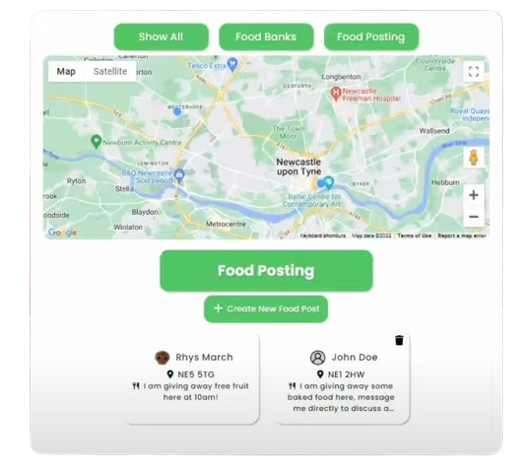
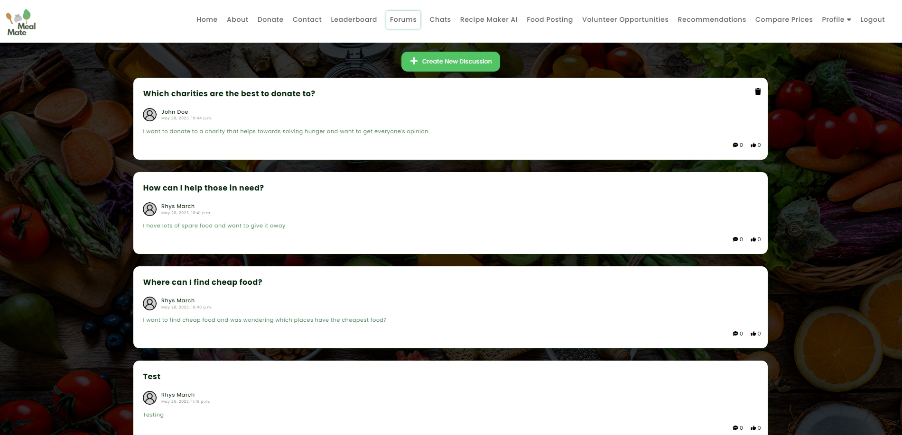

About Meal Mate
Meal Mate is a web application created with HTML, CSS, JS and the Django framework, aimed at reducing food waste and achieving the sustainability goal of zero hunger
created by
Rhys March, Ali Kamel Khalil, Bryant Sujantho, Hamzeh Edlebi, Finn Dowling and Charlie Robinson.
Meal Mate has many features that help users reduce food waste and make a positive impact on the environment.
Features:
- Home Page - Provides an overview of the project and its mission to reduce food waste.
- Account Functionality - Allows users to create accounts, log in, and manage their profiles for a personalised experience.
- Forum - A platform for community discussions on food waste and sustainability.
- Map-based Food Posting - Users can post and claim surplus food items on a map, and view local food banks.
- Price Comparison Page - Compares prices from different retailers to help users find the best deals.
- Volunteering Opportunities Page - Information on how to get involved with food waste reduction and hunger alleviation.
- Donation Page - Facilitates donations to organisations fighting food waste and hunger.
- Chat Feature - A direct messaging system for community interaction.
- Recipe Suggestion Feature - AI-powered recipe recommendations based on user-provided ingredients.
- Leaderboards Page - Displays user rankings based on community engagement and contributions.
- Contact Page - Provides contact details for reaching out to the team.
My Contributions
Project Startup & Leading ─ Development ─ Code Review ─ Technical Demonstration
Project Startup & Leading

Following our project proposal, I had a clear vision for what a successful product could look like.
Motivated by this vision I took the initiative and took on the role as leader,
hoping to keep everyone organised and synchronised with each other to build this successful product.
Initially, I took on the role task delegation. I developed a Gantt Chart that outlined the entire production timeline of Meal Mate,
indicating the start and completion date for each feature.
This required me to assess ethe skills and weaknesses of the team members, ensuring that tasks were assigned effectively.
The aim was high quality and timely completion of tasks.
I proposed using the Django framework, and took the lead in setting up the project's foundations and uploaded
it to GitHub so the team could begin development. The project also required a database, I utilised Docker to set up a
container for local testing and integrated it successfully with Django. I created a document so everyone could set up this container.
Communication was also highly encouraged and I often checked on my teammates, seeing their progress on tasks and offering help if needed.
Development
Being a team of five meant there were two features to be developed on the website per person, but we still helped each other with
our individual features when needed. I worked on the Map Based Food Posting and Forum page,
and then the Contact page, which was decided towards the end.

This map based food posting feature was one of my ideas, and so I was tasked with implementing this one.
It aligns perfectly with our mission of reducing food waste and making a difference.
I utilised the Google Maps API to display an interactive map on the page, and
custom markers can be added to the database to show the locations of food banks around the world, so those in need can find them.
The Food Posting part allows users to create food listings. Users provide
a postcode for the general location and a description, as demonstrated in the image.
This enables them to offer food at specific locations, facilitating food sharing and waste reduction.
This feature depended on users having accounts on the website. I had to wait for the account system to be implemented, which was done by Ali.
Once the account system was in place, Ali assisted me in integrating user accounts with the Food Posting functionality.
To enable users to easily specify locations for custom markers on the map, I designed the system to accept postcodes as input, which are more
user-friendly and memorable than latitude and longitude coordinates. To make this possible, I integrated a library capable of converting postcodes into the
corresponding latitude and longitude coordinates, since the Google Maps API requires latitude and longitude.

The forum feature allows users to create discussion forums on a wide range of topics, with an emphasis on encouraging
discussions related to our mission of reducing food waste and achieving sustainability goals. Users have the freedom to discuss various subjects.
Users create their own discussion forums. Within these forums, other users can participate by posting comments and expressing their opinions.
Additionally, users have the option to interact with forums by liking our disliking them, providing a way to show the popularity and relevance of
discussions. This interactive and engaging system allows for an exchange of ideas and opinions, fostering a community that wants to reduce food waste
and make a difference.
To ensure this feature would be finished on time I got help from Ali, so I could focus more on reviewing everyone else's code, ensuring
the web app runs smoothly for when it comes to submitting it.
I also took charge of implementing the home page and contact page, both of which were relatively straightforward tasks.
The home page serves as an introduction to Meal Mate and our mission. On the other hand, the contact page
allowed users to send emails to an email address we had set up. These features while not complex, are still vital for user experience.
Code Review
Technical Demonstration